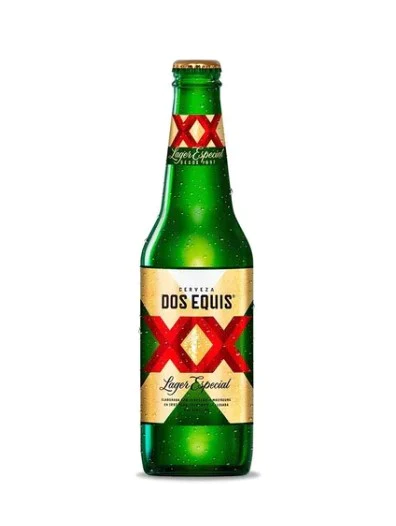

Modelo Especial es una lager mexicana ultra refrescante en un formato de botella muy original. Cuando se vierte en un vaso, revela un vestido amarillo anaranjado coronado por una hermosa espuma blanca.
En nariz, libera aromas de cereales, malta y especias seguido de notas citricas y un golpe a caramelo sutil. Crujiente, espumosa y bien equilibrada, es una cerveza que se puede disfrutar en cualquier momento del dia.
En 1890 Wilhelm Hasse, un inmigrante alemán, llega a México y funda la Cervecería Moctezuma en Veracruz.
No es hasta 1897, que se elabora por primera vez la cerveza “Siglo XX”, conocida hoy en día como Dos Equis XX. ¿Porqué el cambio de nombre?.

El nombre original “Siglo XX” quería conmemorar la llegada del nuevo siglo que iba a comenzar, el s
iglo 20. El nombre junto con la imagen del líder azteca Moctezuma, recordaba la conservación de las tradiciones mientras se abría paso a la evoluci
ón. Pero esto no fue entendido por el público y todos pedían la cerveza “de las dos equis”, nombre que adoptó al final.
Carta Blanca es una cerveza mexicana tipo lager con más de un siglo de tradición cervecera. Con un perfil de sabor equilibrado y refrescante gracias a su proceso de elaboración e ingredientes de primera calidad que la han hecho merecedora de 20 galardones internacionales.ad. 4.5% Alc.
Cerveza Victoria es la marca con mayor tradición de Grupo Modelo, es una cerveza tipo Viena con 4.0º de alcohol, cuya antigüedad y tradición están ligadas a la historia de México. Esta cerveza ofrece un agradable aroma a maltas y lúpulo de la más alta calidad, color ámbar -único en México- y consistente espuma.